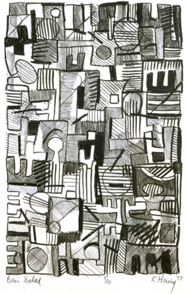
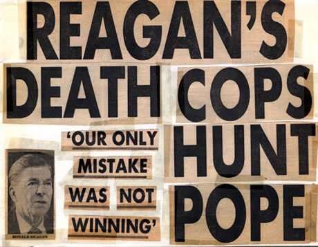
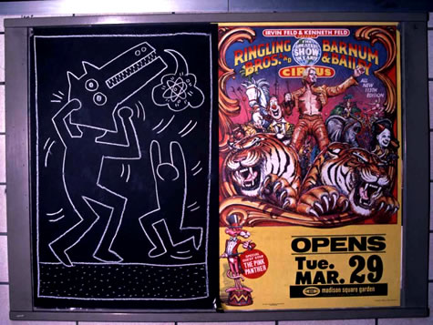
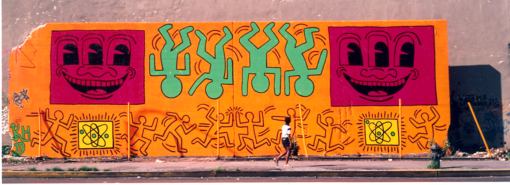
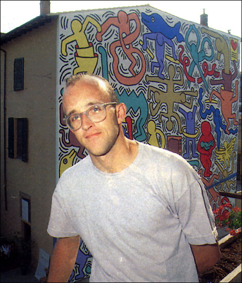

This biography uses Keith's own words to tell his story-words that first appeared in numerous interviews and profiles published during his lifetime, as well as in his personal diaries.
Keith was born to Joan and Allen Haring on May 4, 1958. He grew up in Kutztown, Pennsylvania, the oldest of four siblings. His artistic leanings were evident from a very early age.
“…My father made cartoons. Since I was little, I had been doing cartoons, creating characters and stories. In my mind, though, there was a separation between cartooning and being an ‘artist’…”
Art continued to be a central interest throughout Keith’s experimental and rather rebellious adolescence. Through books and museum visits (Keith saw his first Warhols on a church visit to the Hirshhorn in Washington, D.C.) he began to develop an awareness of modern art. After high school, Keith enrolled in the Ivy School of Professional Art in Pittsburgh.
“I’d been convinced to go [to art school] by my parents and guidance counselor. They said that if I was going to seriously pursue being an artist, I should have some commercial-art background. I went to a commercial-art school, where I quickly realized that I didn’t want to be an illustrator or a graphic designer. The people I met who were doing it seemed really unhappy; they said that they were only doing it for a job while they did their own art on the side, but in reality that was never the case–their own art was lost. I quit the school.”
In 1976, Keith hitchhiked cross-country, stopping along the way to look at other art programs. When he returned to Pittsburgh later that year, he sat in on classes at the University of Pittsburgh, and eventually became involved with the Pittsburgh Arts and Crafts Center, where he had his first important show.
Elements that would become central to Keith’s style were beginning to emerge; he began working with a vocabulary of small, interconnected abstract shapes. At the same time, he began to discover some of his most important influences among modern artists.
“…I went to a huge retrospective by Pierre Alechinsky at the Carnegie Museum of Art. It was the first time that I had seen someone who was older and established doing something that was vaguely similar to my little abstract drawings. It gave me this whole new boost of confidence.”
“…I used the library at Carnegie all the time. I was reading a lot. I was really into Dubuffet at the time… the last works that he did were very similar to the little shaped things I was doing….”
“…And that was the time that I started doing the really big things. I think I was taking the cue from Alechinsky and saying I can do these same things, but I can do them with ink, and I can do them big. I didn’t have to worry about what it was, it was completely spontaneous. But still somehow about the patterns and the shapes…”
“…I saw Christo talk around the same time, and it was right after he had done the Running Fence [1972-1976]. That was another thing that had the most profound effect on me…the event as public art takes it into another arena besides object-making…”
“…The thing I responded to most was [Christo’s] belief that art could reach all kinds of people, as opposed to the traditional view, which has art as this elitist thing…”

Keith was excited enough about finding his artistic role models and about showing his work in Pittsburgh to start to consider his next steps as an artist.
“…When someone canceled an exhibition [at the Pittsburgh Arts and Crafts Center] and they had an empty space, the director offered me an exhibit in one of the galleries. For Pittsburgh, this was a big thing, especially for me, being nineteen and showing in the best place I could show in Pittsburgh besides the museum. From that time, I knew I wasn’t going to be satisfied with Pittsburgh anymore or the life I was living there. I had started sleeping with men…I decided to make a major break. New York was the only place to go…”
Keith arrived in New York in 1978 as a scholarship student at the School of Visual Arts. All at once, he began to experience a multicultural urban community with its own expressive vocabulary; a lively environment in which to explore his gay identity; and a peer group, at the School of Visual Arts and in the vibrantly experimental East Village, as energetic and uninhibited as Keith himself.
He was particularly inspired by the beauty and spontaneity of the graffiti he saw in the subways. Graffiti spoke of a world that was hip and streetwise, creative and spontaneous and underground–all that he admired and wanted to be. At the same time, he admired the technical mastery and calligraphic quality of the graffiti artists’ ‘tags.’
His classes at SVA (with teachers such as Keith Sonnier, Joseph Kosuth, Barbara Buchner, and others) provided Keith with an important critical framework for his emerging style. He began to work obsessively, hanging his drawings in the hallways of the school for everyone to see. He created videotapes and performance pieces, and he also began doing a lot of writing. These experiments were part of his search for a unique style of visual communication.

“I bought a roll of oak-tag paper and cut it up and put it all over the floor and worked on this whole group of drawings. The first few were abstracts, but then these images started coming. They were humans and animals in different combinations. Then flying saucers were zapping the humans. I remember trying to figure out where this stuff came from, but I have no idea. It just grew into this group of drawings. I was thinking about these images as symbols, as a vocabulary of things. In one a dog’s being worshipped by these people. In another one the dog is being zapped by a flying saucer. Suddenly it made sense to draw on the street, because I had something to say.”
“One day, riding the subway, I saw this empty black panel where an advertisement was supposed to go. I immediately realized that this was the perfect place to draw. I went back above ground to a card shop and bought a box of white chalk, went back down and did a drawing on it. It was perfect–soft black paper; chalk drew on it really easily.”
“I kept seeing more and more of these black spaces, and I drew on them whenever I saw one. Because they were so fragile, people left them alone and respected them; they didn’t rub them out or try to mess them up. It gave them this other power. It was this chalk-white fragile thing in the middle of all this power and tension and violence that the subway was. People were completely enthralled.”
“I was always totally amazed that the people I would meet while I was doing them were really, really concerned with what they meant. The first thing anyone asked me, no matter how old, no matter who they were, was what does it mean?”

“The context of where you do something is going to have an effect. The subway drawings were, as much as they were drawings, performances. It was where I learned how to draw in public. You draw in front of people. For me it was a whole sort of philosophical and sociological experiment. When I drew, I drew in the daytime which meant there were always people watching. There were always confrontations, whether it was with people that were interested in looking at it, or people that wanted to tell you you shouldn’t be drawing there…”
“I was learning, watching people’s reactions and interactions with the drawings and with me and looking at it as a phenomenon. Having this incredible feedback from people, which is one of the main things that kept me going so long, was the participation of the people that were watching me and the kinds of comments and questions and observations that were coming from every range of person you could imagine, from little kids to old ladies to art historians.”
Shows at P.S. 122 and Club 57 added to the visibility Keith had gained through his subway drawings and street graffiti. Growing recognition of his work brought Keith more money and new opportunities, but it brought new pressures into his life as well.
“As an art student and being sort of in the underground and having very precise and cynical ideas about the art world, the traditional art-dealer gallery represented a lot that I hated about the art world. But people started to see an opportunity to make a lot of money buying my work. I got disillusioned with letting dealers and collectors come to my studio. They would come in and, for prices that were nothing, a couple hundred dollars, go through all the paintings and then not get anything or try to bargain.”
“I wanted to sell my paintings because it would enable me to quit my job, whether as a cook or delivering house plants or whatever else I was doing–and paint full time. But I had to have a gallery just to give me distance.”
Keith decided to be represented by Tony Shafrazi,which freed him from the pressures of dealing his own work. But more importantly, representation allowed Keith to situate his artwork in the midst of large-scale cultural events.
His first one-man show at Shafrazi in 1982 included drawings, painted tarpaulins, sculptures, and on-site work; Keith also transformed part of Shafrazi’s space into a club-like environment.

The opening was attended by hundreds, and received a great deal of media attention. Keith continued to be energized by his love of, and increasing participation in, popular culture.
The next several years brought Keith world-wide recognition. He worked with amazing energy, and had shows in Rotterdam, Tokyo, Naples, Antwerp, London, Cologne, Milan, Basel, Munich, Bordeaux, Amsterdam, Paris and other cities, as well as numerous shows in New York and across the United States. This level of recognition brought Keith terrific opportunities for travel, collaboration and personal and artistic growth. But sometimes his phenomenal success got in the way of his work.
“By 1984 the subway [drawings] started to backfire, because everyone was stealing the pieces. I’d go down and draw in the subway, and two hours later every piece would be gone. They were turning up for sale.”
“…[It surprised me] that the work, as early as 1982, which was before I had any exhibitions…had already spread throughout the world. People saw it as something that wasn’t really by one artist but was a vocabulary open to anyone. T-shirts appeared in Japan and sneakers in Brazil and dresses in Australia , way before I ever made any commercial object like that…”
In April 1986, Keith opened the Pop Shop, a retail store in New York. He explains his philosophy in selling his art through a commercial venue:
“My work was starting to become more expensive and more popular within the art market. Those prices meant that only people who could afford big art prices could have access to the work. The Pop Shop makes it accessible.”

Before, during and after the opening of the Pop Shop, Keith was dogged by a critical ambivalence towards his work, stemming from its broad popularity.
“It’s frightening how much power critics and curators have. People like that have enough power to write you out of history…”
“…I think that in a way some [critics] are insulted because I didn’t need them. Even [with] the subway drawings I didn’t go through any of the ‘proper channels’ and succeeded in going directly to the public and finding my own audience…I bypassed them and found my public without them. They didn’t have the chance to take credit for what I did. They think that they have the role of finding the artist…and then teaching the public….I sort of stepped on some toes…”
Keith ultimately found acceptance where it counted most for him.
“The things that have always given me the strength and confidence not to worry about [negative criticism] are, first of all, support from other artists, artists whom I look up to and respect much more than I respect these critics or curators, and second, things that come from real people, people who don’t have any art background, who aren’t part of the elitist establishment or of the intellectual community but who respond with complete honesty from deep down inside their hearts or their souls.”
In 1988, Keith was diagnosed with AIDS. By that time, AIDS had already deprived New York City, the art world, the world at large and Keith himself of many friends and luminaries. The diagnosis did not come as a surprise to Keith. He publicly acknowledged his illness in a remarkably candid interview in Rolling Stone magazine. Keith’s response to his illness was characteristically philosophical.
“No matter how long you work, it’s always going to end sometime. And there’s always going to be things left undone. And it wouldn’t matter if you lived until you were seventy-five. There would still be new ideas. There would still be things that you wished you would have accomplished. You could work for several lifetimes….Part of the reason that I’m not having trouble facing the reality of death is that it’s not a limitation, in a way. It could have happened any time, and it is going to happen sometime. If you live your life according to that, death is irrelevant. Everything I’m doing right now is exactly what I want to do.”
“All of the things that you make are a kind of quest for immortality. Because you’re making these things that you know have a different kind of life. They don’t depend on breathing, so they’ll last longer than any of us will. Which is sort of an interesting idea, that it’s sort of extending your life to some degree.”
Of course, Keith’s reputation has continued to grow, and his work is more widely admired now than ever before. Keith had broader concerns, however, than extending his reputation as an artist. Before his death, he established the Keith Haring Foundation to continue his charitable support of children’s and AIDS-related organizations.
Keith’s contribution to the art of the 20th century is difficult to fully appreciate, because ultimately he transformed our idea of what art is. When once asked to state the values he was trying to impart in his work, Keith replied,
“A more holistic and basic idea of wanting to incorporate [art] into every part of life, less as an egotistical exercise and more natural somehow. I don’t know how to exactly explain it. Taking it off the pedestal. I’m giving it back to the people, I guess.”